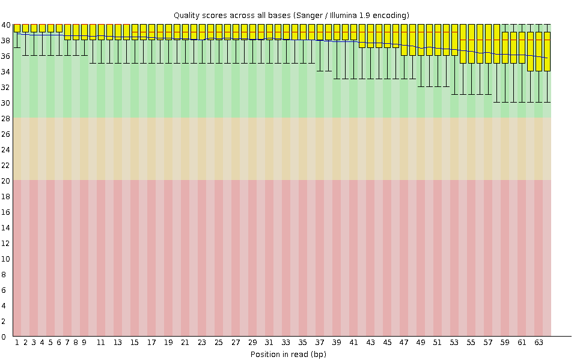
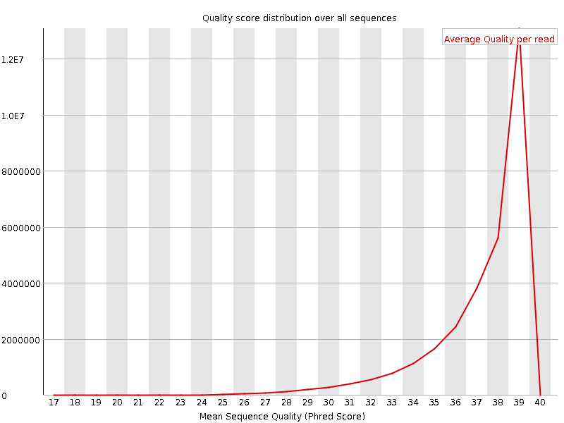
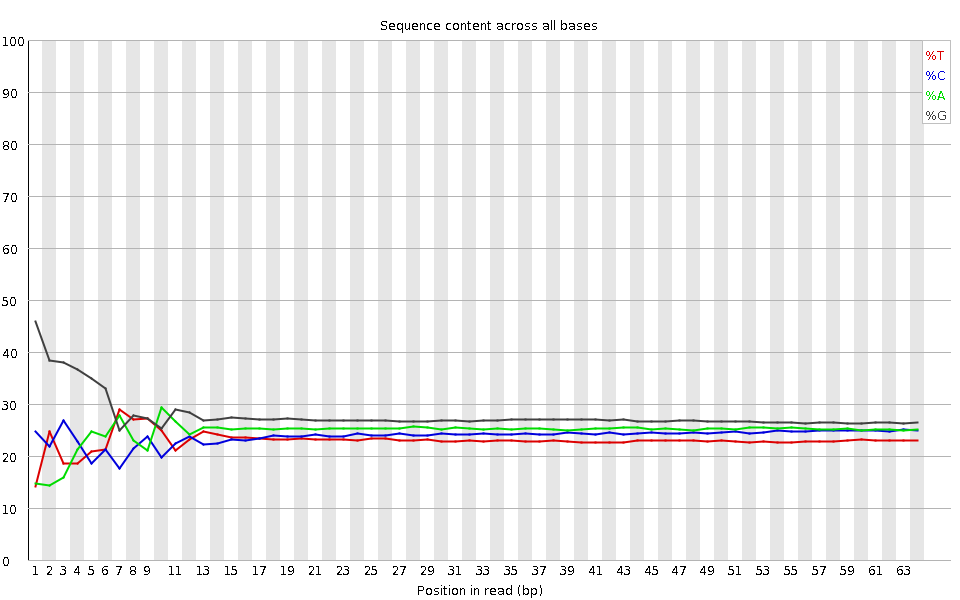
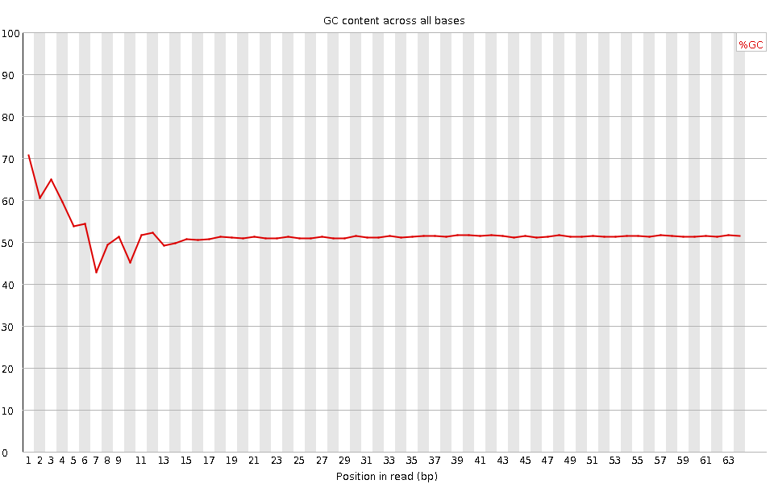
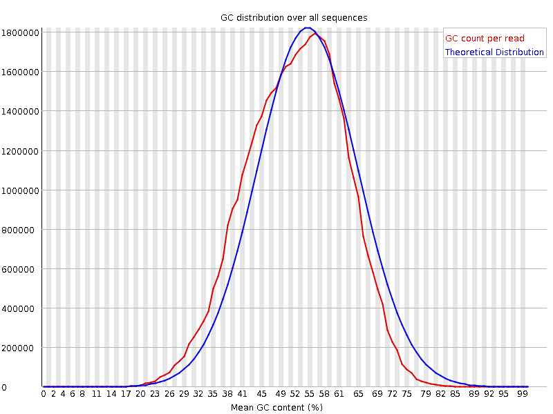
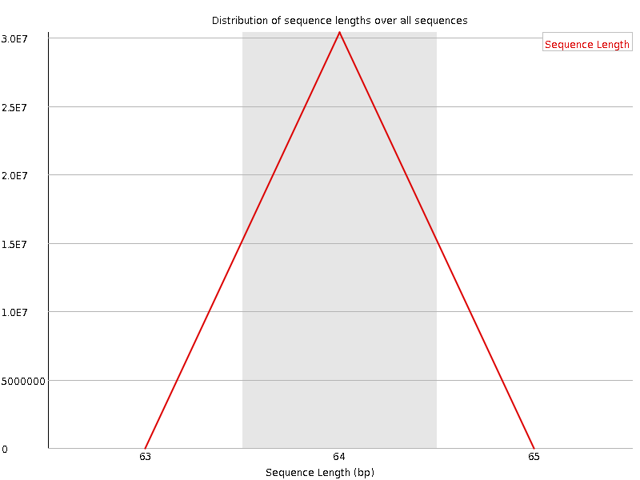
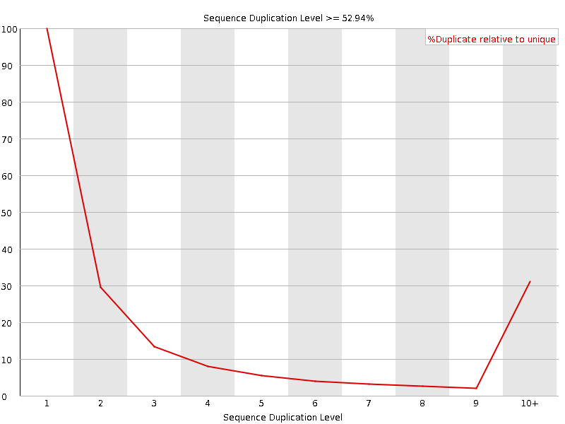
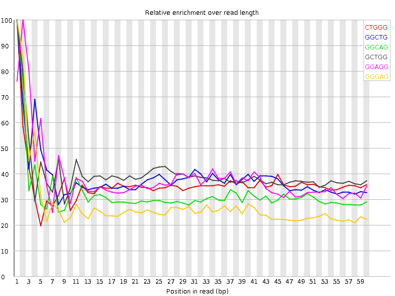

![[OK]](Icons/tick.png) Basic Statistics
Basic Statistics
| Measure | Value |
|---|---|
| Filename | SRR315300_pe_1.f.fastq |
| File type | Conventional base calls |
| Encoding | Sanger / Illumina 1.9 |
| Total Sequences | 30382338 |
| Filtered Sequences | 0 |
| Sequence length | 64 |
| %GC | 52 |
Per base sequence quality

Per sequence quality scores

![[FAIL]](Icons/error.png) Per base sequence content
Per base sequence content

Per base GC content

![[WARN]](Icons/warning.png) Per sequence GC content
Per sequence GC content

Per base N content

Sequence Length Distribution

Sequence Duplication Levels

Overrepresented sequences
No overrepresented sequences
Kmer Content

| Sequence | Count | Obs/Exp Overall | Obs/Exp Max | Max Obs/Exp Position |
|---|---|---|---|---|
| CTGGG | 5259090 | 2.3647285 | 6.5586705 | 1 |
| GGCTG | 5033975 | 2.2635067 | 5.885147 | 1 |
| GGCAG | 5196840 | 2.1718233 | 6.729182 | 1 |
| GCTGG | 4730115 | 2.126877 | 5.323583 | 1 |
| GGAGG | 5842360 | 2.0907936 | 5.4553037 | 2 |
| GGGAG | 5199370 | 1.8606881 | 6.6974635 | 1 |
| GGGCA | 4241245 | 1.7724682 | 5.649714 | 1 |
| TGGGG | 4321695 | 1.6640353 | 5.3925943 | 2 |
| GTGGG | 3940750 | 1.5173554 | 8.374555 | 1 |
| GGGGA | 4146715 | 1.4839765 | 7.6471734 | 1 |
| GGGGT | 3297560 | 1.2697 | 5.8943815 | 1 |
| GGGGG | 3950310 | 1.2548985 | 7.413963 | 1 |
| GTGGA | 2729655 | 1.1840268 | 5.453849 | 1 |
| CGGGG | 2036510 | 0.7554857 | 5.7501955 | 1 |